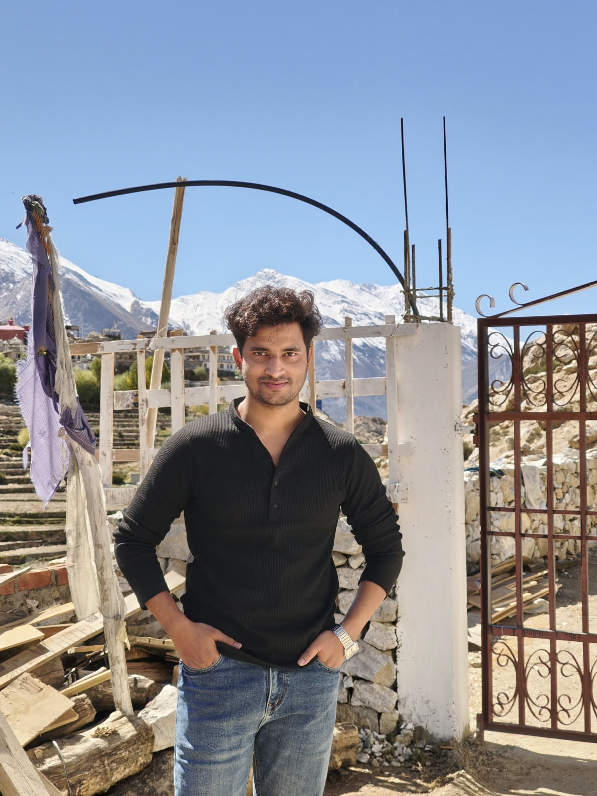

Engineering Autonomous Multi-Agent Ecosystems.
Generative AI Engineer with 2+ years of production experience architecting scalable multi-agent systems using LangGraph, AutoGen, and CrewAI. Pioneer in Model Context Protocol (MCP) standardization, enterprise RAG pipelines, and offline containerized edge architectures for human-in-the-loop AI.
Experience the Autonomous Agent Swarm
Test real-world agent workflows architected by Arif. Watch intelligent multi-agent swarms collaborate across LangGraph state machines, MCP tool execution, and Human-in-the-Loop gates.
Salesforce Ingestion
LangGraph Supervisor
Deep Web Researcher
Opportunity Synthesizer

Bridging Cutting-Edge LLMs with Deterministic Production Systems
I am a Generative AI Engineer with a relentless passion for building autonomous agent swarms that solve high-friction, mission-critical business bottlenecks. From building AI agents at Alliant Group to deploying offline multi-agent medical systems at Sogeti (Part of Capgemini) for Johnson & Johnson, my mission is to turn cutting-edge foundation models into robust, tamper-proof enterprise systems.
My architectural philosophy centers around four core pillars: State Machine Rigor (LangGraph) for cycle control, Protocol Standardization (Model Context Protocol - MCP) for scalable tool integration, Air-Gapped Edge Deployment (Docker & Raspberry Pi) for data privacy, and Human-in-the-Loop (HITL) governance for zero-hallucination compliance.
Mastery Across the Agentic Stack
A comprehensive matrix of frameworks, foundation models, protocols, and deployment environments verified in enterprise production.
LangGraph
Cyclic state graphs, checkpointing, multi-agent supervision, and human-in-the-loop review nodes.
AutoGen & CrewAI
Conversational agent swarms, role-playing agents, group chats, and hierarchical orchestration.
Model Context Protocol (MCP)
Anthropic standard toolchain protocol, building fast MCP servers and client integrations for agent tool calling.
Enterprise RAG & Vector DBs
Chunking strategies, hybrid search, semantic reranking, embedding pipelines, Chroma, Qdrant, Pinecone.
SLMs & Unsloth Fine-Tuning
Small Language Models (Phi-3, Llama 3, Mistral) fine-tuning with LoRA/QLoRA via Unsloth for offline inference.
Computer Vision & CNNs
TensorFlow deep convolutional architectures, OpenCV image processing, facial recognition, agro disease classification.
Offline Docker & Raspberry Pi
Zero-internet air-gapped hospital deployments, containerized microservices, local LLM execution on edge devices.
Azure AI Studio & MLOps
Azure AI Language, Vision, Document Intelligence, Logic Apps, continuous evaluation, prompt flow pipelines.
Python, TypeScript & C#
Production Python backend development (FastAPI, Flask, AsyncIO), JavaScript/TypeScript, modern HTML5/CSS, C#, SQL.
Enterprise AI Systems in Production
Explore 5 battle-tested multi-agent applications architected for Alliant Group, Johnson & Johnson, and open-source ecosystems. Click to inspect architecture diagrams and code.
Sales Acceleration Engine
Autonomous multi-agent intelligence pipeline integrated with Salesforce. Solves deal overload for Relationship Directors by prioritizing opportunities with business rules and running deep web research on top 40 daily opportunities.
Strava MedEdge — Offline Clinical Swarm
Air-gapped, zero-internet multi-agent system analyzing surgical audio streams to generate standardized FHIR clinical reports. Deployed inside hospital networks on edge hardware with ACP & MCP protocols.
Med Assist — Jira Sprint Orchestrator
Autonomous workflow connecting to Jira REST API to automatically synthesize complex engineering requirements into epics, user stories, subtasks, and test cases, eliminating manual documentation toil.
Autonomous Multi-Agent System Framework
Unified no-code platform and API layer enabling non-technical teams to orchestrate and deploy multi-agent swarms. Features MCP tool calling, RAG knowledge retrieval, and OpenCV facial recognition security gates.
Plant Diagnosing Expert with CNN & AutoGen
AI application uniting deep learning computer vision (95% accuracy CNN classifier for potato leaf pathologies) with AutoGen conversational agents for immediate agronomy diagnosis, treatment regimens, and farmer advisory.
Engineering Journey & Milestones
A proven track record of deploying autonomous agentic workflows and multi-agent systems in enterprise environments.
AI Engineer
- Building enterprise AI agents and agentic workflows to automate business processes, eliminate repetitive tasks, and deploy scalable production solutions.
- Architecting autonomous Sales Acceleration multi-agent swarms integrated with Salesforce CRM and deep internet research crawlers.
- Reduced relationship director research overhead by 80% with daily automated opportunity prioritization briefs.
Analyst A4
- Built enterprise-grade multi-agent system for medical transcription using LLMs, Agent Communication Protocol (ACP), and LangGraph.
- Integrated autonomous agents with hospital APIs and zero-internet offline Docker container setups on edge Raspberry Pi devices.
- Contributed to toolchain standardization across teams using the Model Context Protocol (MCP).
- Implemented human-in-the-loop review architecture achieving 90% improved clinical documentation accuracy.
Microsoft Azure & Academic Qualifications
Official certifications validated by Microsoft in Azure AI, Natural Language Processing, Vision, and Document Intelligence.
Azure AI Engineer Associate
Azure AI Fundamentals (AI900)
Azure Fundamentals (AZ900)
Build NLP Solutions with Azure AI Language
Build an Azure AI Vision Solution
Intelligent Document Processing (AI Doc Intelligence)
Formal Engineering Education
Execute Arif-CLI Commands
Directly probe Arif's architecture background, swarm protocols, and credentials via an interactive in-browser terminal emulator.
Connected to LangGraph state machine & MCP tool registry. Type help for command listing.
Let's Build the Next Agentic Breakthrough
Whether you are scaling enterprise multi-agent workflows, integrating Model Context Protocol, or designing offline containerized AI — let's connect.